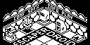

a new game or an old game
september 15, 2026

Escaper DROID
Once I was able to get github up and running and take back all my old repositories, I was ready to make some games. I remembered I was working on an Isometric room based game I called Escaper Droid. Or would I start a new game ... A pinball game?
Finishing the old Escaper Droid was the chose I made and it did a very very very good job in commenting my own code. Just by reading it I was able to continue coding and actually the game was almost finished. So started coding and coding and did some more coding, but I was too slow, I needed help. Why not try AI, not for doing the creative part, and the engine was already working, but to help with bug fixing and compressing the code. Turned out the engine was already so tide, nothing much to squeeze left.
What AI helped me with was creating an editor for the levels. Again I didn't ask it to create the content, but rather a tool to help me. Well actually I did ask it to create a level and it was bad at it, but it was good at creating the tool. The game is made for the Arduboy, but someone created a very nice browser emulator (with sound), so you can try the game yourself (button above), or have a look at the Escaper Droid online Editor (button below).